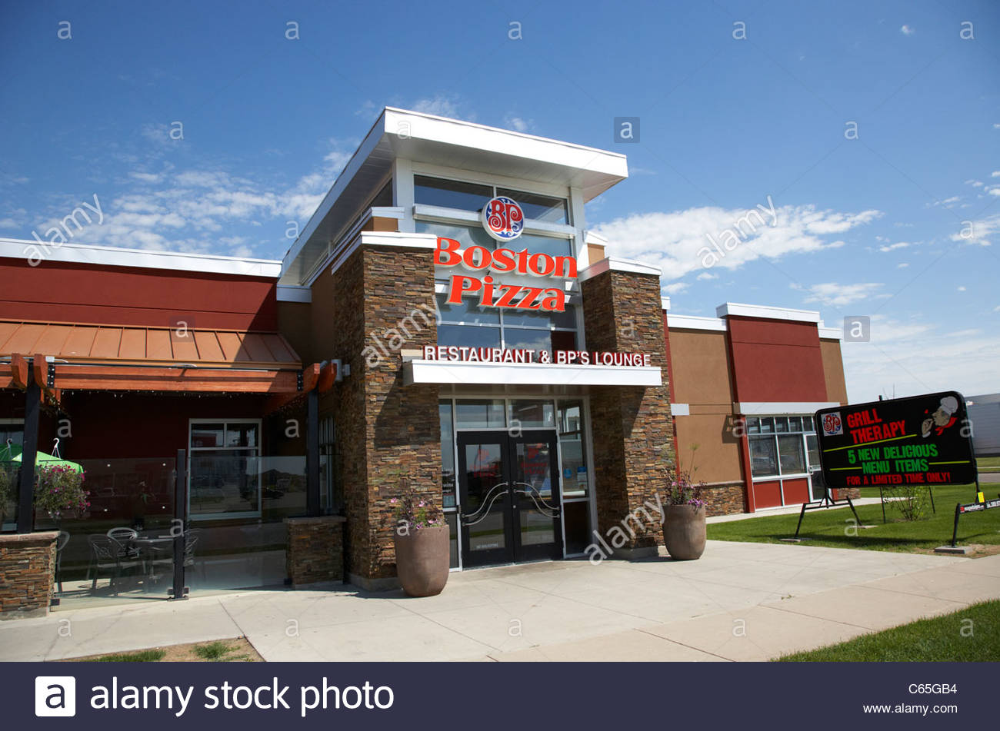
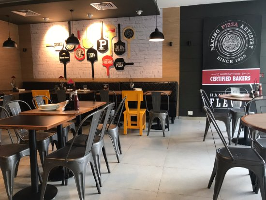
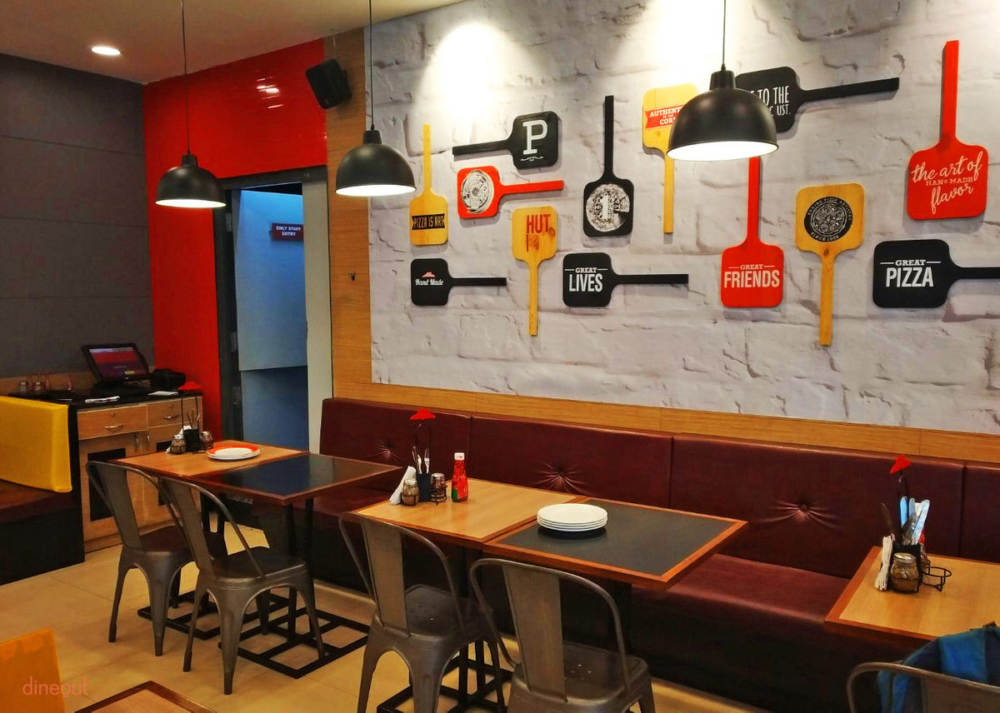
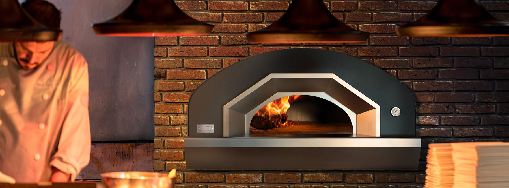
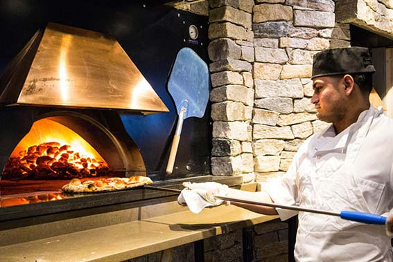

About Us
As a Canadian owned pizza chain, Okotoks Pizza restaurants are working to strengthen their communities. They do this in a variety of ways, such as participating in food drives, supporting fire departments, or sponsoring sports teams. But the reason why is always the same: family is important.
  A community is strong only when its based on healthy, happy families.
Family and togetherness has been the core of the okotoks’s Pizza business.
Established in 2001 with 13 locations and growing,
we are proud to say Okotoks Pizza is Western Canadian Born and we thank our customers for making Okotoks Pizza a great Canadian success. When he was younger, James Castro was always excited and happy to go help out his parents after school in their local family pizza shop. He was excited because he knew the happiness that his family’s pizza brought to other
families and friends and how pizza brought everyone together as a family. He loved watching his parents build a masterpiece
from the freshest dough, 100% pure crushed tomato sauce, 100% pure mozzarella cheese, the freshest spices and the freshest toppings and best ingredients each and every time. His parents taught him some basics, but the most important rule was that customers and consistency come first. When you build and bake pizza, pasta or any item on the menu, you must make it like you are making it for your own family. If you wouldn’t eat it, your customers wouldn’t want to eat it either, so you must make it perfect each and every time. To make the story short “Bake the perfect pizza every time”. Best Pizza, Best Ingredients!.


James struggled to find a great tasting pizza like old times, that reminded him of his childhood.
He tried almost every pizza place he came across and still no luck.
So he thought why shouldn’t there be a real pizza place that offers great tasting pizza with the freshest ingredients and taste, just like old times, no frozen dough or bleached flour. And that’s when Okotoks’s was born, offering his customers the best pizza and pasta in flavour and ingredients.
We’ve always believed that pizza leads to fun times with the family.
When a family orders Pizza, they can just relax and enjoy each other’s
company – no one has to cook, clean up, or worry if the food will turn out all right.
A night with Okotoks Pizza means a great meal and great memories to share.
Across Canada, communities are what help Okotoks Pizza restaurants grow.
Out of thanks, we give back to these places in many different ways. When we do it with helping families in mind,
we know it will always make an impact. Best Pizza. Best Ingredients.